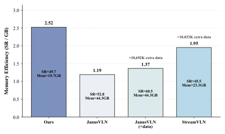
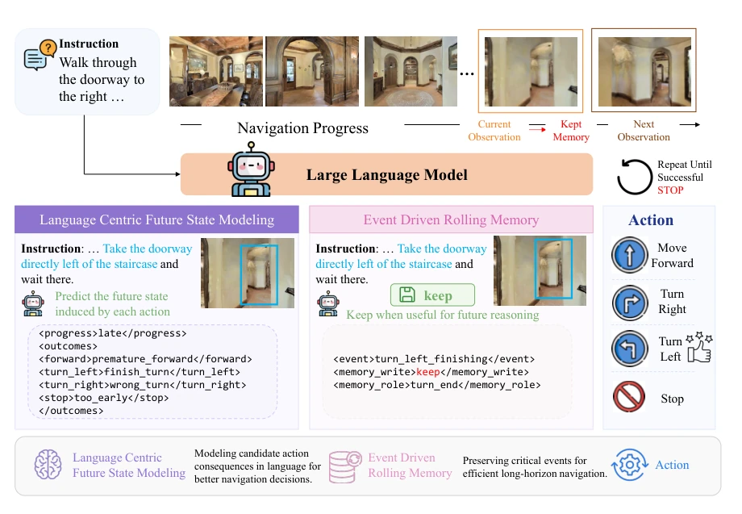
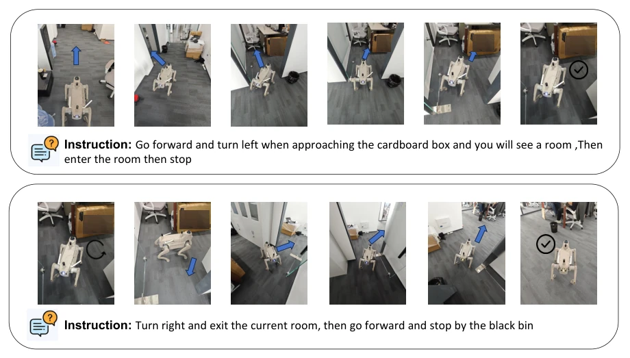
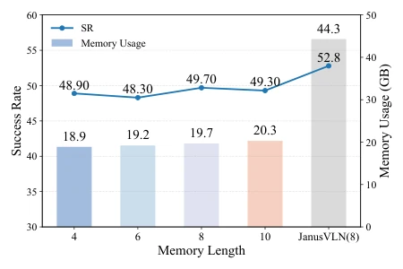
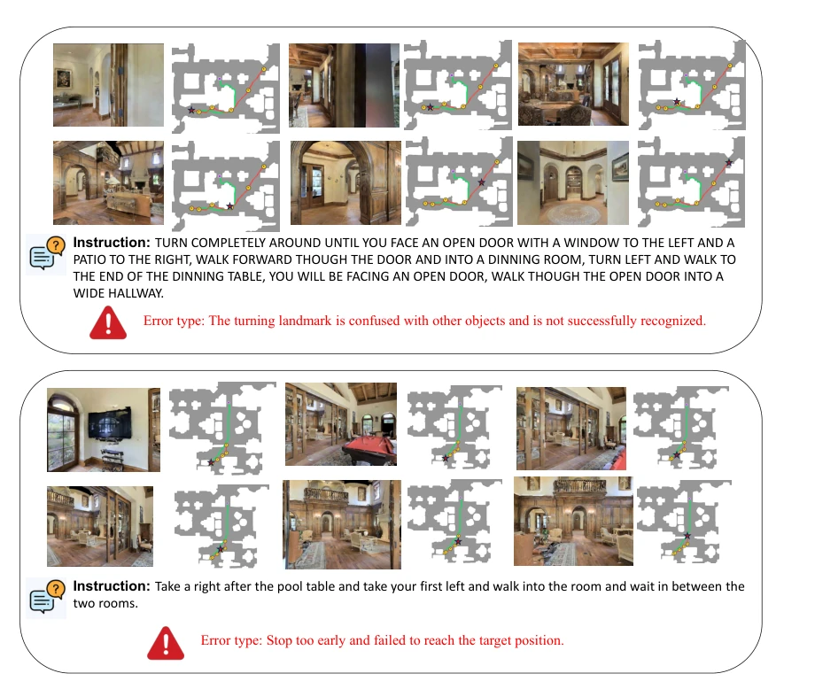
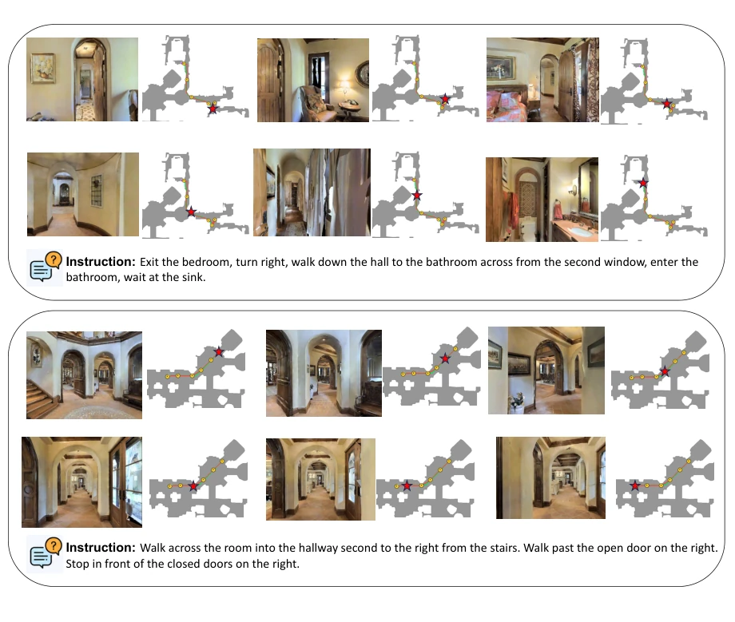
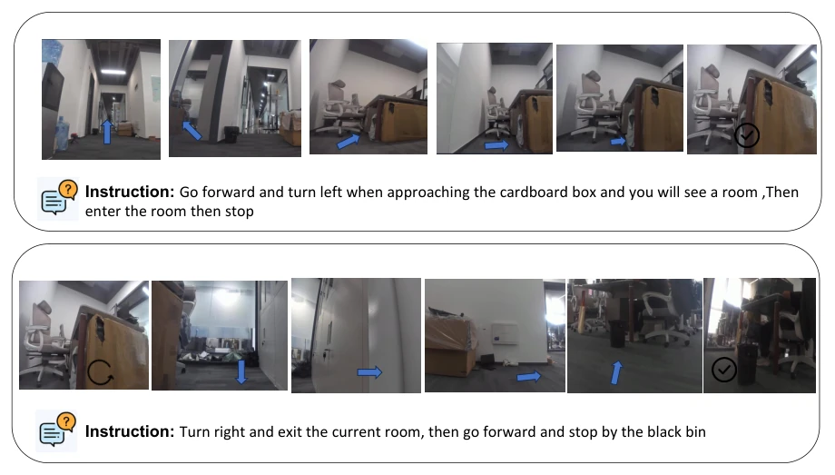

这篇 LookStep 给 VLN 界吹来一股“清爽风”。它没搞那些花里胡哨的 3D 重建或外部空间工具，纯靠语言模型自己“脑补”未来状态和关键事件。它把“下一步动作”变成了“未来状态评估”，这招挺聪明，相当于让模型先想清楚后果再行动，而不是盲目模仿。不过，它依赖专家轨迹生成标签，算不算另一种形式的“数据依赖”？而且只用了单目 RGB，没加深度或全景，虽然省资源，但在复杂场景下会不会“眼瞎”？毕竟图 3 里那些真实世界测试看着挺顺利，但没提泛化到完全未见过的复杂地形。总的来说，是个性价比很高的方案，适合算力有限的边缘设备，但别指望它能替代那些烧钱的大模型。其核心在于用语言标签替代昂贵的空间建模，虽然牺牲了一点精度，但换来了内存效率的显著提升，对于边缘部署来说是个不错的妥协。
This LookStep brings a 'refreshing breeze' to the VLN community. It does not employ flashy 3D reconstruction or external spatial tools, relying purely on the language model to 'infer' future states and key events. It transforms 'next-step action' into 'future state evaluation', a smart move equivalent to letting the model think through consequences before acting, rather than blindly imitating. However, it relies on expert trajectories to generate labels; does this count as another form of 'data dependency'? Moreover, it only uses monocular RGB, without depth or panoramic, saving resources, but will it be 'blind' in complex scenes? After all, the real-world tests in Fig. 3 look quite smooth, but generalization to completely unseen complex terrain is not mentioned. Overall, it is a highly cost-effective solution, suitable for edge devices with limited computing power, but do not expect it to replace those costly large models. Its core lies in using language labels to replace expensive spatial modeling; although sacrificing some accuracy, it brings a significant improvement in memory efficiency, which is a good compromise for edge deployment.
Existing MLLM-based VLN methods (e.g., JanusVLN, StreamVLN) have improved performance, but at a high cost. They rely on large amounts of extra data (e.g., NaVid, Uni-NaVid used million-scale data) or external spatial tools (e.g., VGGT, SpatialVLM) increasing GPU memory overhead. The traditional next-step action prediction paradigm has low data utilization, while maintaining cognitive maps or historical frames leads to computational redundancy. LookStep aims to solve resource efficiency problems, achieving efficient data and memory utilization through language-centric future state modeling and event-driven memory, without adding external tools. Fig. 1 intuitively shows the disadvantage of existing methods in memory efficiency, highlighting the necessity of LookStep. Especially JanusVLN, although SR is high, memory occupancy is more than double that of LookStep, which is unacceptable in resource-constrained scenarios.

Figure 1: Memory efficiency comparison of different methods in R2R. LookStep performs the best memory efficiency and does not require extra data for training.
LookStep is an end-to-end framework, inputting instructions and observations, outputting actions. The core is LFS and EDRM. The LFS module does not directly predict actions, but predicts navigation progress (progress) and future states (outcomes) for each candidate action, outputting structured with language labels. This utilizes information theory principles, as future states contain action-related information. The EDRM module is responsible for memory management; each step decides whether the current observation is written to memory (write label) and its semantic role (role), adopting a FIFO queue. During training, joint supervision of progress, state, memory decision, and action. During inference, online memory update. Fig. 2 shows the overall architecture; LFS is responsible for evaluating action consequences, EDRM is responsible for retaining key events, both collaborate to achieve efficient navigation. Through this method, the model makes the implicit reasoning process explicit, not only improving data utilization but also reducing redundant computation, enabling it to maintain good navigation performance under monocular RGB input.

Figure 2: Structure of LookStep approach. It uses language tags in Language Centric Future State Modeling and Event Driven Rolling Memory to realize data and memory efficiency navigation.
Tested on R2R-CE and RxR-CE. Baselines include JanusVLN, StreamVLN, NaVILA, etc. Metrics include SR, SPL, NE. LookStep achieves 49.7% SR on R2R-CE Val-Unseen, superior to JanusVLN (52.8% SR but large memory) and StreamVLN. Memory efficiency is highest (SR/GB). Ablation experiments show LFS and EDRM are both important. Removing EDRM leads to OS decline. Real-world tests are also successful. Fig. 3 shows real scene results, Fig. 4 compares memory usage with SR, Fig. 5 analyzes failure cases. Experiments show that even without using extra data, LookStep can improve performance by improving the modeling paradigm, proving its effectiveness.

Figure 3: Qualitative results of our methods on real-world.

Figure 4: Memory usage and SR comparison in R2R dataset with different memory length

Figure 5: Visualization and presentation of the types of failure cases in R2R dataset.

Figure 6: Visualization of LookStep on the R2R benchmark.

Figure 7: Visualization of the first-person perspective in real-world experiments.